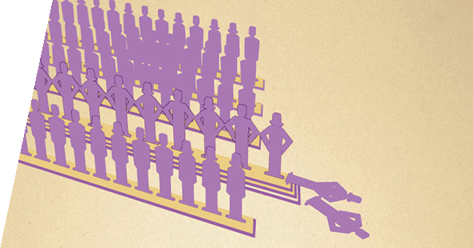

Magazin für Diskurs und Meinungsbildung
„Die Vernunft ist das erste Opfer jeder Gefühlsaufwallung.“
Frank Herbert, Dune ‑ Der Herr des Wüstenplaneten.Neueste Themen
Mindestlohn
- Gerhard Bosch, Thorsten Kalina, Claudia Weinkopf Deutschland braucht den Mindestlohn
- Neue internationale Studien zeigen, dass selbst vergleichsweise hohe Mindestlöhne positive Effekte auf der betrieblichen Ebene und auf dem Arbeitsmarkt haben können.

- Dr. Guido Raddatz Mindestlöhne gefährden Arbeitsplätze
- Vor allem die trotz des jüngsten Aufschwungs auf dem Arbeitsmarkt noch immer schlechten Beschäftigungschancen von Geringqualifizierten, Langzeitarbeitslosen oder Menschen mit mehreren Vermittlungshemmnissen könnten durch einen Mindestlohn weiter Schaden nehmen.
Moral
Im öffentlichen Sprachgebrauch werden die Begriffe »Moral« oder »moralisch« oft unsachgemäß/laienhaft mit dem »Guten« oder »gut« gleichgesetzt. Tatsächlich handelt es sich hierbei um ein System von Grundsätzen und Normen, das von verschiedenen Faktoren wie Tradition, Gesellschaftsform oder Religion beeinflusst wird und einen Leitfaden für das zwischenmenschliche Verhalten darstellt. > Umfassendes zum Thema Moral und Werte